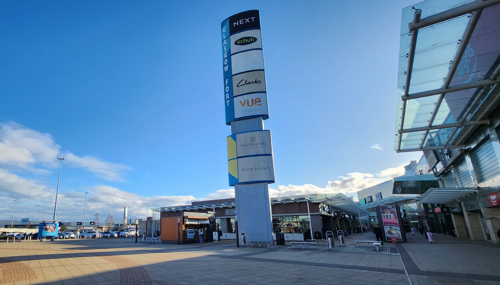
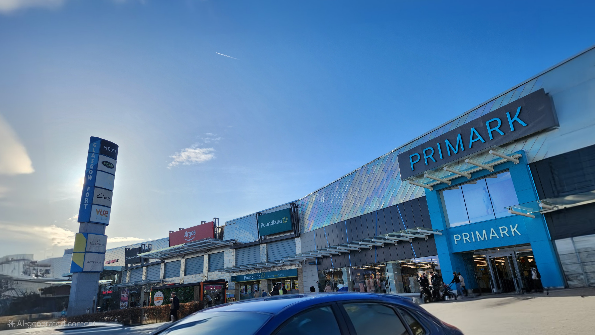
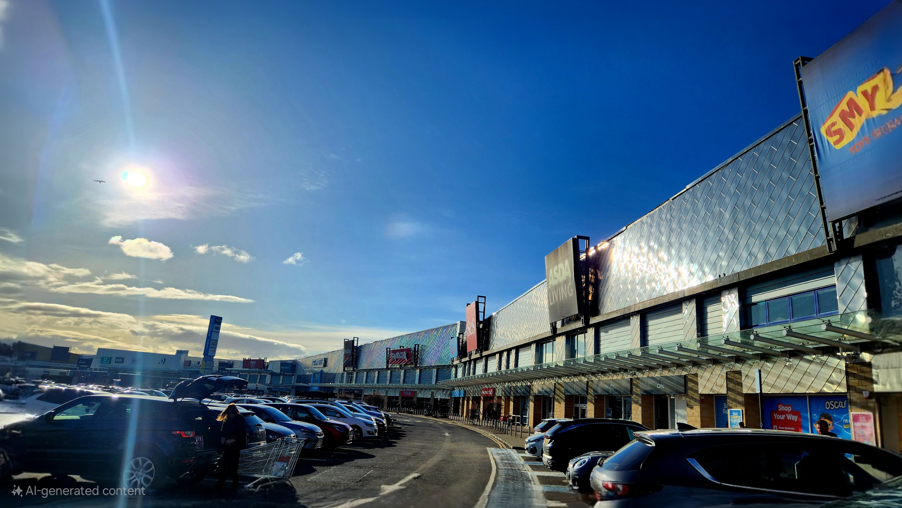
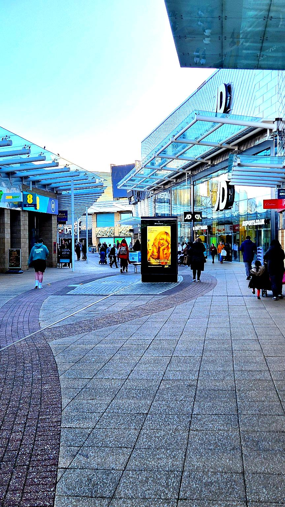

Glasgow Fort
is a large retail and leisure complex located in the eastern part of Glasgow,
offering a variety of attractions and amenities for visitors. Here are some highlights:
. Shopping:
• Wide Range of Stores: Glasgow Fort has many high-street fashion stores like Next, H&M, Primark, M&S, and JD Sports,
offering everything from clothing and accessories to home goods and beauty products.
• Tech and Gadgets: There are also tech stores like Apple and Currys PC World for electronics and gadgets.
2. Dining:
• Restaurants & Cafes: Glasgow Fort has a great selection of dining options, whether you’re in the mood for casual
dining, coffee, or a quick bite. Popular places include Nando’s, Frankie & Benny’s, Pizza Hut, and Starbucks.
You’ll find a variety of choices for different tastes.
• Food Court: The center also has a food court where you can grab fast food or casual meals in between shopping.
3. Leisure and Entertainment:
• Cineworld Cinema: Glasgow Fort is home to a Cineworld cinema, where you can catch the latest films in a comfortable,
modern setting.
• Go Karting: A fun and thrilling experience for families and groups is available with TeamSport Go Karting located
nearby, making for a great activity after shopping.
4. Outdoor Shopping & Open-Air Areas:
• Open-Air Layout: The complex has a mix of indoor and outdoor shopping, with an open-air area that provides a
pleasant atmosphere for browsing and walking.
• Scenic Areas: There are also some outdoor spaces where you can relax, take a break, and enjoy the surroundings.
5. Events:
• Seasonal and Themed Events: Glasgow Fort often holds special events, such as seasonal promotions, festivals,
or themed entertainment. These can include live performances, charity events, or holiday-themed activities.
6. Fitness:
• Gym and Health Clubs: Glasgow Fort is also close to gyms and fitness centers, including PureGym,
making it convenient for those who want to keep up their fitness routine while visiting.
7. Accessibility:
• Free Parking: Glasgow Fort offers free parking, making it an accessible option for shoppers traveling by car.
The center is well-served by public transportation, including nearby bus stops.
8. Nearby Attractions:
• Proximity to The Emirates Arena: While not part of the Glasgow Fort complex, the Emirates Arena is nearby and offers
events such as sports matches, concerts, and other activities.
Glasgow Fort
Opening Hours:
• Monday - 10:00 am - 10:00 pm
• Tuesday - 10:00 am - 10:00 pm
• Wednesday - 10:00 am - 10:00 pm
• Thursday - 10:00 am - 10:00 pm
• Friday - 10:00 am - 10:00 pm
• Saturday - 9:00 am - 7:00 pm
• Sunday - 10:00 am - 6:00 pm
Glasgow Fort:
One of the outdoor, modern retail parks offer mixed of fashion, lifestyle,
entertainment with over 100 stores including cinema. Glasgow Fort opens until late night,
enjoy the movie after shopping and free parking available too.
To visit Glasgow Fort Glasgow Fort Shopping | Glasgow Shops, Restaurants & Cinema.